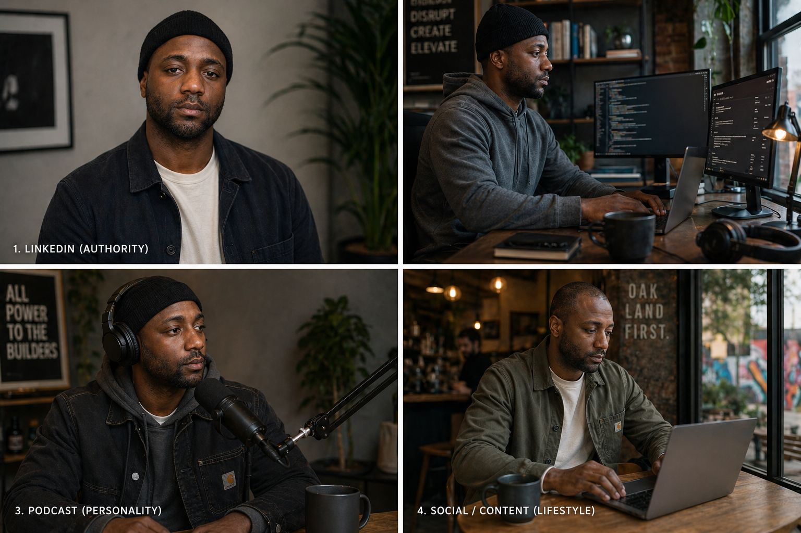

Reference 01
Side profile
Defines head shape, jaw, chin, nose, and hairline.
Character.md is a lightweight Character DNA system for creating photorealistic AI images with consistent identity across headshots, lifestyle scenes, podcast visuals, and content campaigns.

Face shape changes. Hairlines shift. Beards get recast. Everything starts to feel like generic stock photography. Character.md gives the model a reusable identity system before you ask it to create a scene.
The subject slowly becomes someone else across generations.
Hairline, beard length, and density change between outputs.
Scenes look polished but impersonal, like generic campaign assets.
Prompts are written from scratch instead of assembled from reusable blocks.
The reference photos inform the strict identity layer: face, skin, hair, beard, proportions, and expression range. Once those are locked, the environment can change.
Defines head shape, jaw, chin, nose, and hairline.

Locks facial structure, beard density, and natural asymmetry.

Establishes the primary identity baseline.
Character DNA is a structured way to define identity, style, and context so the model stops guessing. The identity layer stays strict. Wardrobe, setting, camera, and lighting stay flexible.
Face shape, skin tone, skin texture, hairline, beard, eyes, proportions, and constraints.
Wardrobe system, taste, cultural signal layer, and what should be avoided.
Environment, props, pose, camera presets, lighting, and output mode.
must maintain identical facial structure, same person across all images, no variation in bone structure, no reinterpretation, consistent face shape, jawline, eyes, and proportions
## Character DNA Strict: - Face shape - Jawline and chin - Eye shape - Skin tone and texture - Hairline and crown density - Beard length and density - Identity constraints Flexible: - Wardrobe - Environment - Props - Pose - Camera - Lighting Global constraint: Photorealistic, consistent identity, natural skin texture, no visible brands, not a stock photo.
Headshots maximize identity fidelity. Lifestyle photography adds cultural context, environment, personal taste, and story.
Identity input.
Clean baseline.
Better realism.
No collar, smart casual.
Identity in context.
The same character file supports controlled headshots and richer lifestyle scenes.
The repo includes validation tools, but the public workflow stays simple enough for beginners.
Create a small batch of 6–8 images using the same Character DNA and Face Lock snippet.
Ask: does the face match, are hair and beard consistent, and does it feel like the intended person?
If anything drifts, tighten the Character DNA and regenerate the batch.
The install guide walks users from reference photos to their first headshot and then into lifestyle batches.
Use 3–5 clear references.
Define face, hair, skin, beard, body, and expression.
Prevent the model from recasting the person.
Start with a clean headshot.
Move into café, desk, podcast, and speaking scenes.
Save the images that pass the quick check.
This gives beginners a clear path and gives advanced users room to customize.
Beginners can start with the install guide and starter prompts. Advanced users can go deeper with validation files, test prompts, and drift diagnostics.
character-md/
├── README.md
├── LICENSE
├── install.md
├── character.md
├── CONTRIBUTING.md
│
├── prompts/
│ ├── starter-prompts.md
│ ├── headshot-prompts.md
│ ├── lifestyle-prompts.md
│ └── face-lock-snippet.md
│
├── validation/
│ ├── simple-checklist.md
│ ├── scoring-rubric.md
│ ├── drift-diagnostics.md
│ └── test-prompts.md
│
├── examples/
│ ├── prompt-assembly.md
│ └── image-progression.md
│
└── landing-page/
├── index.html
└── assets/